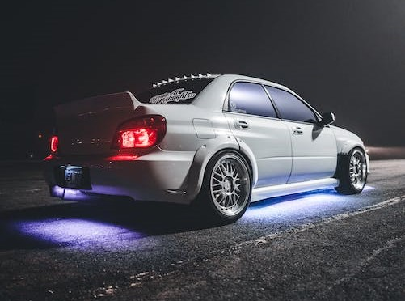

Areas of modification
The essence of modification of a tuner car is an attempt at a significant performance increase—or the appearance of high performance—from a stock motor vehicle through the addition, alteration or outright replacement of parts. Although this largely involves modifying the engine and management systems of the vehicle to increase power output, additional changes are often required to allow the vehicle to handle such power, including stiffened suspension, widened tires, better brakes, and improved steering and transmission modifications (such as the installation of a short shifter). Although largely insignificant in terms of appearance, certain modifications such as low-profile tires, altered suspension, and the addition of spoilers can change the overall appearance of the car, as well as adding downforce to increase traction.
